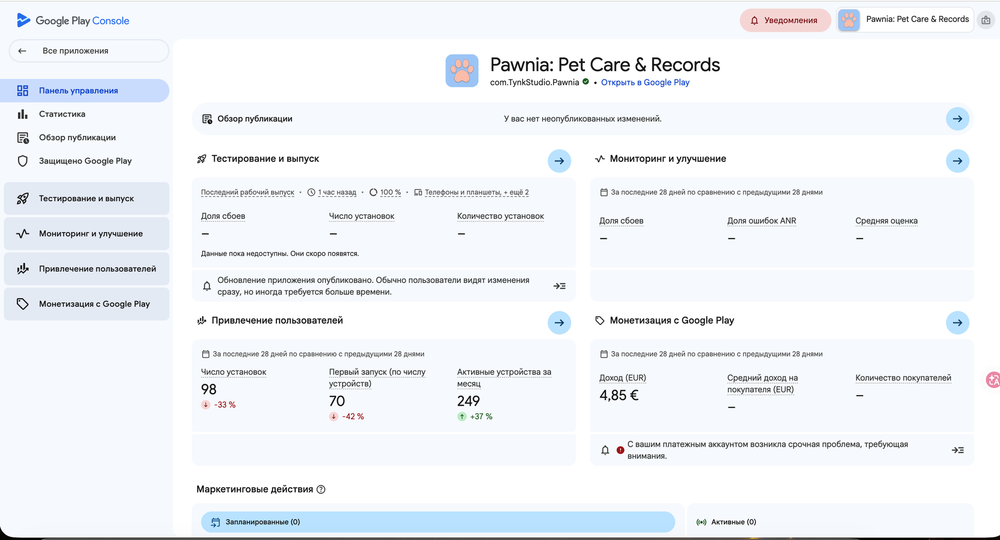

2.1 Панель управления приложением
После выбора приложения в Play Console открывается панель управления — отсюда ты попадаешь во все нужные разделы. Структура сайдбара здесь другая, чем у Apple: разделы сгруппированы по задаче (тестирование, мониторинг, привлечение, монетизация), а не по типу контента.
Разделы в левом меню
Из них нам нужны четыре: Обзор публикации (где отправляются изменения на проверку, шаг 2.6), Тестирование и выпуск (сборки и релизы, шаг 2.2), Мониторинг и улучшение (внутри него прячется «Контент приложения», шаги 2.3–2.5) и Монетизация с Google Play (цена, покупки).

Обзор публикации
Список изменений, готовых к отправке на проверку, и статус последней публикации. Сюда возвращаемся на шаге 2.6.
Тестирование и выпуск
Загрузка App Bundle, треки тестирования, рабочая версия (production). Разберём на шаге 2.2.
Мониторинг и улучшение
Не только метрики — здесь же, вложенным пунктом «Правила и программы → Контент приложения», живёт вся декларация Data Safety, Privacy Policy и рекламы (шаги 2.3–2.5). Это неочевидно и легко искать в неправильном месте.
Монетизация с Google Play
Цена приложения и настройка покупок — аналог Pricing and Availability / In-App Purchases у Apple.